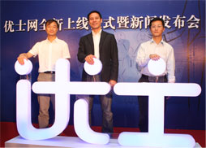
On 19th October 2010, at Shanghai's landmark Waldorf Astoria Hotel on the Bund, Ushi launched a new chapter in its mission to help millions of professionals in China to accelerate their careers. In the building full of classic charm, Ushi held an official launch and press conference. More than 50 Chinese and foreign journalists and nearly 20 Ushi Charter Members came together, witnessing the exciting moment with the Ushi management team.
The Waldorf Astoria Hotel is situated in the original location of the Shanghai Club of the 1920s. Generations ago, it was the site for the business elite. It was a unique backdrop for Ushi's new elite business networking service. The other theme of this press conference was the celebration of the successful close of nearly RMB 10 million investment by leading investors. Ushi's CEO Dominic Penaloza said that personal success relies on connections and national competitiveness relies on efficiency of business networking. Ushi helps people network more efficiently and creates a better business environment for China.
Snapshots
Here are some photos from the event:
2 pm, VIP and media registration
| 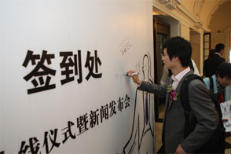 | 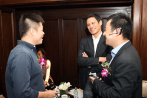 | 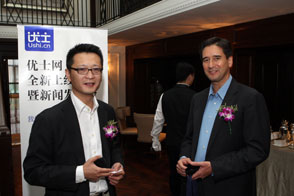 |
| Michael Long, Charter Member of Ushi, Vice President of 51.Com, signs his name | Dominic Penaloza, CEO & Co-founder of Ushi chats with Charter Member representatives (Left: Philip Kuai, Director of Product and Strategy at AdChina. Right: Leo Wang, Founder of Mobile 2.0 Forum) |
Charter Members have a good talk (Left：Julian Huang, Sapientia Capital Partner, Right: Ker Gibbs, Managing Director of the Hina Group) |
2:30 pm, press conference officially starts
| 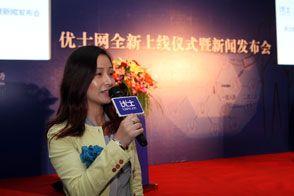 | 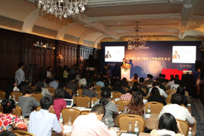 | 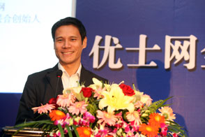 |
| The MC, Nirvana Xu, Ushi Marketing Director, announces the press conference officially started. | A distinguished gathering at press conference. | Dominic Penaloza, CEO & Co-founder of Ushi makes a speech and drolly calls himself "Xiao Lu". |
| 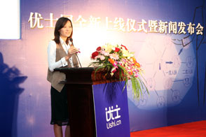 | 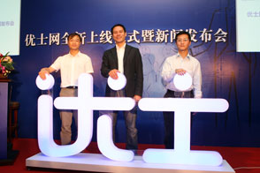 | 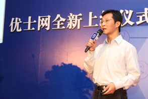 |
| Ms Lou Yun Li, Founding Partner of Milestone Capital, makes a speech. | Three co-founders of Ushi light up Ushi logo.
From left to right (Jiff He, CTO; Dominic Penaloza, CEO; Quentin Zhang, CPO) |
Quentin Zhang, CPO & Co-founder of Ushi, makes a speech named "Marketing and Product Strategy — Balance of quality and speed" |
 |
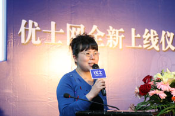 | 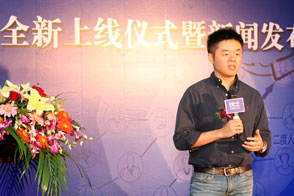 |
| Jiff He, CPO & Co-founder of Ushi, makes a speech named "Creation and Execution — Blowout of speed and passion" | Zhang Hong, Executive Deputy Editor-in-chief, General Manager of Xinmin.cn and Charter Member of Ushi, addresses. | Philip Kuai, Director of Product & Strategy and Head of Mobile at AdChina and Charter Member of Ushi, addresses. |
| 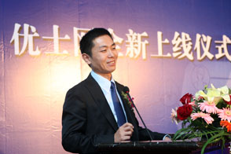 | 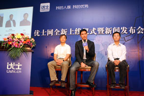 | |
| Evans Jia, Director of Anjuke and Charter Member of Ushi, addresses. | Three co-founders of Ushi answer the questions from journalists. |
4 pm, the press conference officially finished
 |
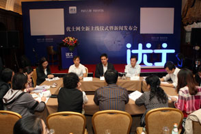 | |
| Mr. Dominic Penaloza, CEO & Co-founder of Ushi is interviewed by CBN TV. | Many top tier media interview three co-founders of Ushi. |